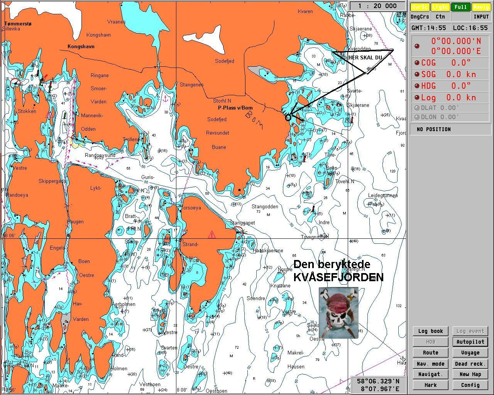

Oppbrott's fest
Nå skal vi snart på tur. For mer info om turen trykk på linken under. "Rozinante's hjemmeside" Poenget med denne siden var at du/dere er herved invitert på en fest med temaet oppbrott. Denne festen inneholder det en sommerfest skal inneholde. Vi stiller kun til disposisjon et sted. Resten ordner vi etter hvert.
Praktisk info: Letteste måte å komme til Sodefjed hytteområde er med båt. Dette gjøres ved å kjøre båt etter kartet under. En annen mulighet er å ringe til noen som har båt. Hvis ikke du har båt og ikke kjenner noen som har båt kan du gå ned på Tømmerstø Brygge så finner du nok noen som har båt og skal samme vei som du. Snakk eventuelt med betjeningen på Rio Pizza Tømmerstø, De pleier å være rimelig oppdatert på slike ting!
Ellers håper vi at alle har det bra og kommer på festen vår
Ta med: Mat, Solkrem og det måtte finne nødvendig for at du skal klare å ha det gøy
De av dere som ikke har mottatt tekstmelding er også velkomne, grunnen til at tekstmeldingen ikke kom var nok at jeg er et rote hue og har derfor ikke telefonnummer til alle! Vil du/dere ha med dere noen og de er snille og greie gutter og piker er det helt i orden!
Hilsen Paul, Staale og Ragnar!
Rozinante's hjemmeside {kind=link}